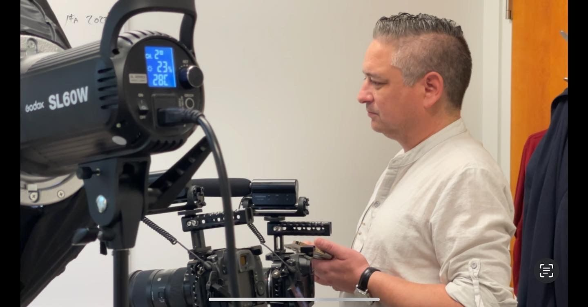
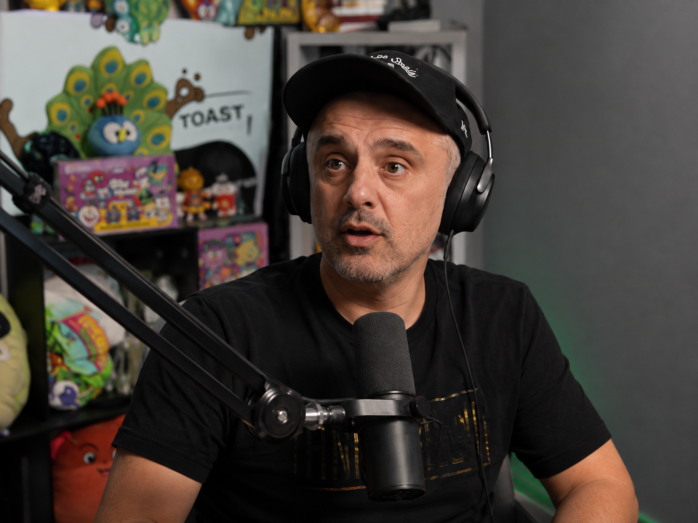

TOASTY MEDIA
Toasty Media
Studio. Peeps. Lit.
Make the media. Find the right people. Publish the ideas. Three products from one company, built for people who have something worth saying.


Toasty Studio
Toasty Studio
Your conversation. Your studio.
Bring guests into the room, direct the session, record the conversation, and keep AI production and Guest Finder inside the same workspace.
Podcast + LiveAI ProductionGuest FinderDirected roomsLocal recordingClient workspace

ON AIR


SpotlightTwo-upThree-upScreen + speakers
Copy inviteMicCameraRecord
IntroStingerApplauseOutro
Client loginPodcast/Live, AI Production, and Guest Finder live inside Studio.

Toasty Peeps
Human context, agent-accessible.
Peeps lets AI agents discover, qualify and reach the right person based on what they’ve actually done, experienced and know. Peeps is currently in private beta.
Toasty Lit
Ideas worth keeping.
Books and publishing from Toasty Media, beginning with The Eloquence Protocol on communication, AI, trust, and leadership.